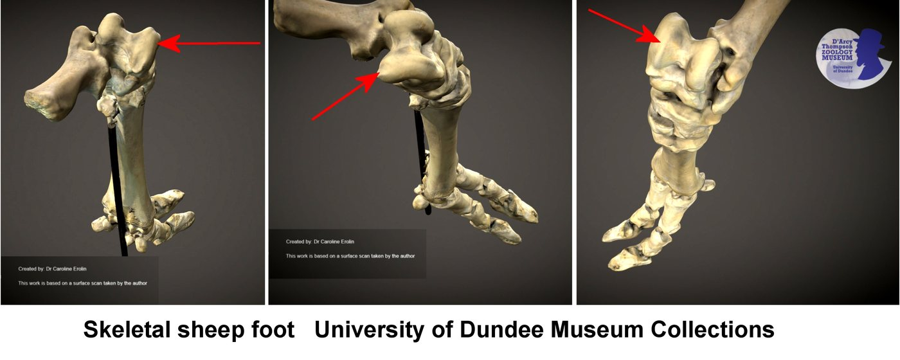
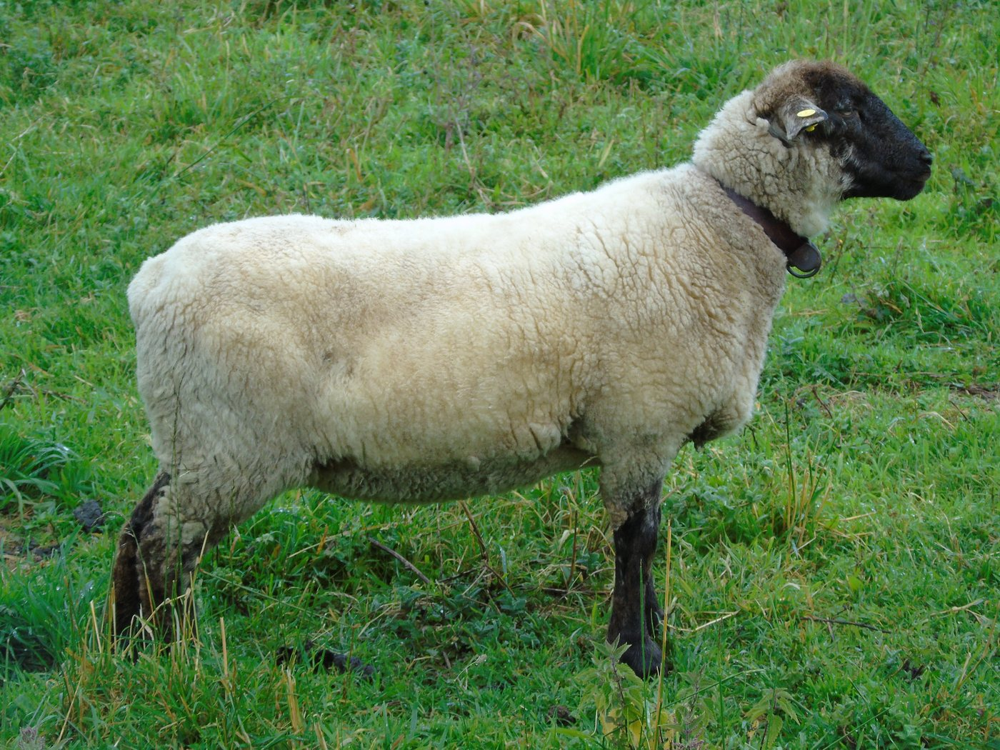
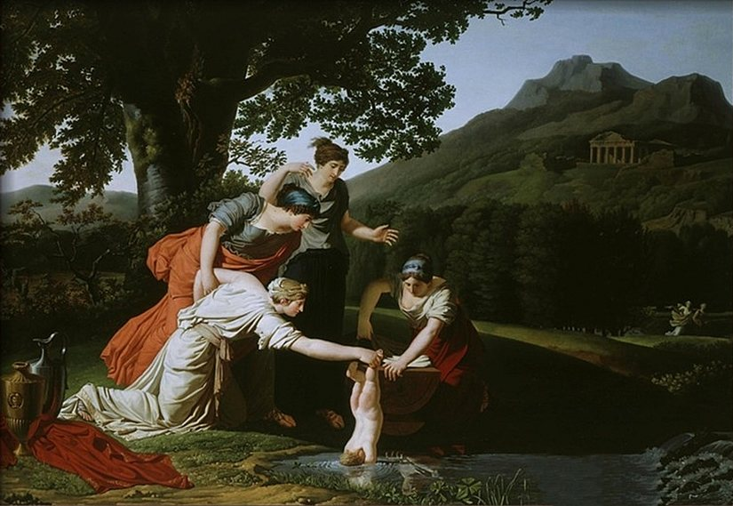
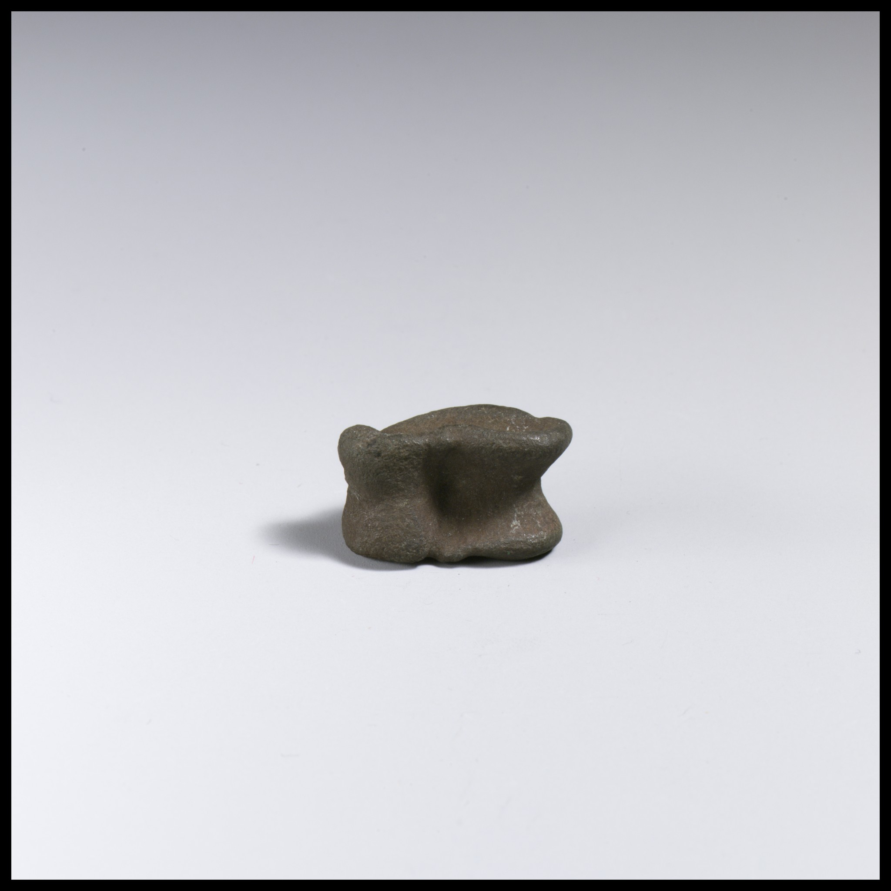

Activité 1
Trouver l'astragale
Talus humain, pied et squelette de mouton, schéma bovin et planche comparative ancienne.
Prête à tester avec relecture adulte.
Bibliothèque du projet
Choisissez une catégorie pour atteindre directement les visuels, imprimables, outils interactifs et contenus d'approfondissement.
L'activité 1 est prête à tester avec relecture adulte. Les ressources des activités 2 à 4 permettent de tester la méthode, avec les corpus et objets manquants clairement signalés.
Projeter et observer

Activité 1
Talus humain, pied et squelette de mouton, schéma bovin et planche comparative ancienne.
Prête à tester avec relecture adulte.

Activité 2
Cartes animaux et supports anatomiques ; les photographies d'os A-D restent à compléter.
Corpus d'os A-D à compléter.

Activité 3
Images tardives et modernes, appui anatomique et cartes de chronologie contextualisées.
Support pilote ; corpus antique à compléter.

Activité 4
Cinq visuels de maquette simulent l'emplacement d'un futur corpus ; ils ne déterminent ni datation, ni fonction, ni réponse attendue.
Visuel provisoire — source, pertinence scientifique et droits à valider avant publication définitive.
HTML, PDF pilotes et archives WIP
Le HTML reste disponible pour la consultation et l'impression depuis le navigateur. Les nouveaux PDF pilotes ont été composés pour l'A4 et contrôlés page par page ; un test d'impression physique et les validations indiquées restent nécessaires.
PDF pilotes : Fiche · Guide · Supports · Corrigé · Kit complet
Word éditable : Fiche · Guide · Supports · Corrigé · Kit complet
HTML : Fiche élève · Guide d'encadrement · Support visuel · Corrigé / pistes
PDF pilotes : Fiche · Guide · Supports · Corrigé · Kit complet
Word éditable : Fiche · Guide · Supports · Corrigé · Kit complet
HTML : Fiche élève · Guide d'encadrement · Support visuel · Cartes animaux · Cartes os · Corrigé / pistes
Archives WIP : Fiche · Guide · Visuels · Animaux · Os · Pistes
PDF pilotes : Fiche · Guide · Supports · Corrigé · Kit complet
Word éditable : Fiche · Guide · Supports · Corrigé · Kit complet
HTML : Fiche élève · Guide d'encadrement · Support visuel · Cartes · Corrigé / pistes
PDF pilotes : Fiche · Guide · Cartes · Corrigé · Kit complet
Word éditable : Fiche · Guide · Cartes · Corrigé · Kit complet
HTML : Fiche élève · Guide d'encadrement · Cartes · Support visuel · Corrigé / pistes
Prototype interactif
Tournez un astragale 3D, suivez le fil et associez des trous à des lettres pour coder ou décoder un mot.
Adaptation pédagogique moderne WIP, non reconstitution antique définitive.
Ouvrir le jeuEn préparation
Les modèles destinés à l'anatomie comparée ne seront publiés que lorsque l'objet représenté, l'espèce, l'orientation, l'échelle, les modifications, les droits et l'usage pédagogique auront été vérifiés. Aucun modèle externe non validé n'est présenté comme disponible.
Récits, méthode et repères
Traçabilité
Les crédits détaillés figurent sous chaque image et dans les pages d'activité. Les sources publiques mobilisées comprennent notamment BodyParts3D / DBCLS, Caroline Eroline, le Museum of Veterinary Anatomy FMVZ USP, Antoine Borel, Peter Paul Rubens et Alexander Rothaug.
Consulter le document de crédits · Comprendre les droits et les statuts de diffusion